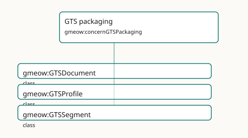

GTS packaging
The single-file Graph Transport Substrate and bundled documentation distribution.

Participating Slices
- gts - GMEOW GTS Transport Module
Terms
| Term | Category | Definition |
|---|---|---|
gmeow:GTSDocument |
class | A single-file Graph Transport Substrate artifact (docs/GTS-SPEC.md): a CBOR Sequence of one or more append-only segments carrying an RDF 1.2 graph and any content-addressed binarie |
gmeow:GTSProfile |
class | A named GTS profile (spec §13) — a purpose and requirement set a segment declares. An OPEN value vocabulary (individuals, never subclasses): extensions add their own profiles (e.g. |
gmeow:GTSSegment |
class | One complete header-plus-frames log inside a GTS document — the unit of independent integrity (spec §3.1): a segment has its own genesis hash, its own id/prev chain, its own profil |